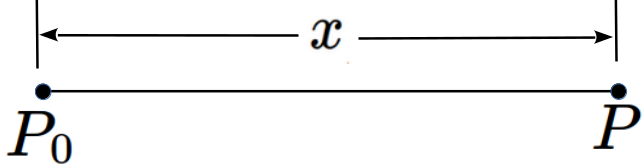
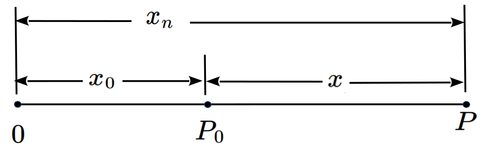
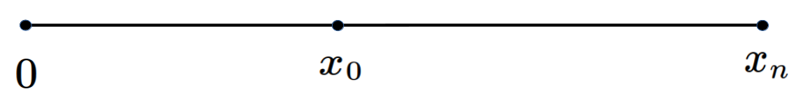

Section18.1Two “Ways of Thinking” About Integration: Summation vs. Antidifferentiation
Beginning in Section 4.1 we observed that when we think about differentiation it is helpful to view differentiation through either the lens of geometry (Leibniz), or the lens of dynamics (Newton), depending on the particular context. Similarly the next section describes two different, but equilvalent, ways to “think about” integration. As before these two viewpoints are, more or less, equivalent, but they provide different insights. Some are easier to see through one lens, others through the other.
Subsection18.1.1Integration as Summation
Suppose a point \(P\) traces out a line segment of some unknown length \(x\text{.}\)

We next partition the line segment between \(x_0\) and \(x_n\) by selecting points \(x_1\text{,}\)\(x_2\text{,}\)\(\ldots \text{,}\)\(x_{n-1}\) such that
The partition points subdivide the interval \([x_0, x_n]\) into subintervals. We represent the length of the first subinterval of \(x\) with \(\Delta x_1\text{,}\) of the second with \(\Delta x_2\text{,}\) and so on. In general \(\Delta{x_i}\) represents the length of the \(i\)th subinterval of \(x\text{.}\) Clearly the length of the line segment \([x_0, x_n]\) is
instead. But this is cumbersome and we are far too lazy to write all of that each time we want to indicate such a sum. Leibniz proposed using the letter “S” (first letter of the word “sum”) to simplify the summation notation. He would have written:
We assume, with Leibniz, that equation (18.1) remains true when the finite differences (\(\Delta{x}\)) are replaced with infinitesimal differences (\(\dx{x}{}\)):
The symbol “\(\int \)” is called an integral sign, and any expression starting with “\(\int \)” followed by a differential is called an integral.
Comment18.1.1.2.Finite vs. Infinitesimal Summation.
For Leibniz the distinction between the summation of infinitesimals and of very small but finite real numbers, was somewhat blurred. Thus he used “\(\dx{x}\)” and “\(\Delta{x} \)” more or less interchangebly.
But we will need to keep them distinct. In modern times it has become customary to distinguish finite and infinitesimal sums by using different alphabets. Since \(\Delta \) comes from Greek and \(\int \) comes from Latin, we extend this convention to finite summation by writing equation (18.1) as
because “\(\Sigma \)” is the Greek version of the Latin capital letter “S”.
Equation (18.2) is the simplest possible integral. It says that if we add up the lengths of all of the differentials that make up the line segment from \(x_0\) to \(x_n\) we will get its length, \(x_n-x_0=x\text{.}\)
This is surely not surprising to you and you are probably wondering why we’ve taken the trouble to wrap such an obvious statement in this arcane notation. The reason is this: equation (18.2) is a very simple form of what is known as the Fundamental Theorem of Calculus which we will need to become very comfortable with. Later, when things get complex, it will be helpful to refer back to equation (18.2) and remind ourselves that, at its heart, integration is about adding up differentials.
DIGRESSION: Coordinates and Variable Names.
In Figure 18.1.1.1 we were rather careless about the distinction between the label of a point, e.g. \(P\) or \(P_0\text{,}\) and its coordinate, e.g. \(x_1\) or \(x_2\text{.}\) A natural question would be “Aren’t they the same thing?”
No, actually they aren’t. The label of a point is the name we use to distinguish it from other points. The (horizontal) coordinate of a point is it’s (horizontal) distance from the origin. Consider the following diagram.

The labels (names) of the two points are \(P_0\) and \(P\text{.}\) Since \(x_0\) measures the distance between zero and \(P_0\) it is by definition the coordinate of the point labeled \(P_0\text{.}\) Similarly \(x_n\) is the coordinate of \(P\text{.}\)
On the other hand since \(x\) — the distance between \(P_0\) and \(P\) — is not measured from the origin it is neither a coordinate nor the label of a point. It is the length of the line segment \(\overline{P_0P}\text{.}\) If we partition this line segment and compute \(\int\dx{x} \) we get equation (18.2).
Since their coordinates distinguish one point from another as well as their labels do, a (very) common practice is to dispense with the labels altogether and make the coordinates serve both purposes as in the diagram below.

Strictly speaking this is an abuse of our notation and it can cause confusion because it isn’t always clear whether \(x_0\) and \(x_n\) refer to points on the line, or their distance from the origin (their coordinates). Always be sure it is clear to you which usage is intended.
END OF DIGRESSION
Subsection18.1.2Integration as Antidifferentiation
Definition18.1.2.1.Antiderivative.
Suppose we have a function
\begin{equation}
y=F(t)\tag{18.3}
\end{equation}
with derivative \(\dfdx{y}{t}=F^\prime(t)=f(t)\text{.}\) Then \(F(t)\) is called an antiderivative of \(f(t)\text{.}\)
Observe that since \(\dx{y} \) is a differential it follows that \(f(t)\dx{t}\) is also a differential so the expression \(\int f(t)\dx{t}\) is a valid integral.
Thus it appears that if \(\dx{y}=f(t)\dx{t} \) is known then \(y=F(t)\) will be the antiderivative of \(f(t)\text{.}\) That is to say, integration appears to be “differentiation run backwards.” This seems reasonable since differentiation consists of subtracting (finding differentials) and integration consists of adding (summing differentials). Addition and subtraction can both be thought of as “doing the the other backwards.”
It follows immediately from Definition 18.1.2.1 and the Constant Rule 4.3.1.1 that if a function has one antiderivative then it has infinitely many. That is, if \(F(x)\) is an antiderivative of \(f(x)\) then so is \(F(x)+5\text{.}\) And \(F(x)+80\text{.}\) In fact if \(C\) ia a constant then so is \(F(x)+C\) for every possible value of \(C\) because we get a (slightly) different antiderivative each time we add a constant to \(F(x)\text{.}\)
Thus if we know one antiderivative of \(f(x)\text{,}\) then we know all (infinitely many) of the antiderivatives of \(f(x)\text{.}\) Remember this. We will return to it when we discuss Theorem 25.2.0.2 below.
Example18.1.2.2.A Simple Integration.
For example, can you find a formula for this integral: \(\int2t\dx{t}\text{?}\) Before reading on give it a try.
Clearly \(f(t)=2t\) so from Definition 18.1.2.1 we see that \(F(t) =
t^2\) is one antiderivative, and we can capture all of the antiderivatives by adding an arbitrary constant. Thus
This shows that the expression \(\int f(t)\dx{t} \) represents a multifunction much like the “\(\text{arc}\)” functions we encountered in Chapter 6. An alternative way to think of this is to say that \(\int f(t)\dx{t} \) represents the set of all antiderivatives of \(f(t)\text{,}\) each of which differs from the others by a constant. Since the multifunctions arising from integration are relatively simple, we will dispense with the formal language and call
the most general antiderivative of \(f(t) = 2t\text{.}\)
There will be times when we will want to choose only one of the functions represented by \(\int f(t)\dx{t}\text{.}\) This will consist entirely of choosing the value of \(C\) that works for the problem in front of us so we won’t fuss over it too much. If we write \(\int f(t)\dx{t}\) without conditions it means the set of all antiderivatives of \(f(x)\text{.}\) To specify a particular antiderivative we will still write \(\int f(t)\dx{t}\) but we will also explicitly indicate which antiderivative we mean.
Beginning in the early twentieth century integration theory has grown considerably beyond what we will be learning in this course. But the underlying notions of the integral as a sum and the integral as an antiderivative are still very helpful and we will rely on them rather heavily, at least at first.
Problem18.1.2.3.
Show that the following statements are true. Assume \(C\) is an arbitrary constant. (We have not shown you how to compute any of these integrals. But you know how to differentiate. Read Definition 18.1.2.1 again carefully.)
The exercises in Drill 18.2.0.3 were all a bit contrived. Since we gave you the antiderivatives you don’t really need to know how tho integrate.
The real question here is “How could you find these antiderivatives if we hadn’t given them to you?”
We Integrate Differentials, Not Functions.
Integration can be usefully thought of as either summation or antidifferentiation. We will flip between these two mindsets as convenient in much the same way that we flipped between the dynamic (Newtonian) and geometric (Leibnizian) viewpoints in Part I.
Since it is valid to think of \(\int
f(x)\dx{x}\) as representing an antiderivative of the function \(f\) it is customary to speak these symbols aloud as “the integral of \(f\) of \(x\text{.}\)” While this is not wrong, it is not quite right either. Properly speaking, we should say “the integral of the differential \(f(x)\) times \(\dx{x}\text{.}\)” But no one does that so we won’t either.
But if we (the authors or your instructor) consistently speak incorrectly (as we tend to do in this instance) it is easy for you (the student) to develop unfortunate habits of mind. We will take a moment to try to prevent that from happening.
The integral sign was designed (by Leibniz) to indicate summation, not antidifferentiation. As a result it is very easy to use it improperly. Sooner or later most people will fall into the habit of dropping the final “\(\dx{x}\text{,}\)” of writing \(\int f(x)\) instead of \(\int f(x)\dx{x}\text{,}\) and then calling them both the integral of the function \(f(x)\text{.}\)
This is an unfortunate, but common, abuse of the notation. You can not integrate a function, only a differential. We strongly suggest that you take care to avoid this bad habit for as long as you can because it can be very confusing. Especially when the concepts are new.
Remember that
\begin{equation*}
\int f(x)
\end{equation*}
is meaningless no matter how convenient it might be because it indicates that we are summing a function, not a differential.
But the meaning of
\begin{equation*}
\int
f(x)\dx{x}
\end{equation*}
is clear. We’re summing up all of the differentials of the form \(f(x)\dx{x} \text{.}\)
Finally, there is a puzzle here. In Subsection 18.1.1 we introduced integration as summation, and we invented the integral sign \(\left(\int{}\right)\) to reflect that idea. But in this section we have reinterpreted the integral to mean antidifferentiation and the idea of “integral as summation” seems to have died a quiet death. Nowhere in Example 18.1.2.2 does a summation appear.
But this is the point. Finding the sum \(\int 2x\dx{x}\) by addition is a very daunting task. Where would you even begin? By reinterpreting it as an antidifferentiation problem we are able to find the sum, \(\int 2x\dx{x}+C\) without the bother of adding up (infinitely many) differentials of the form \(2x\dx{x}\text{.}\) Antidifferentiation gives us a way to compute the sum indirectly.